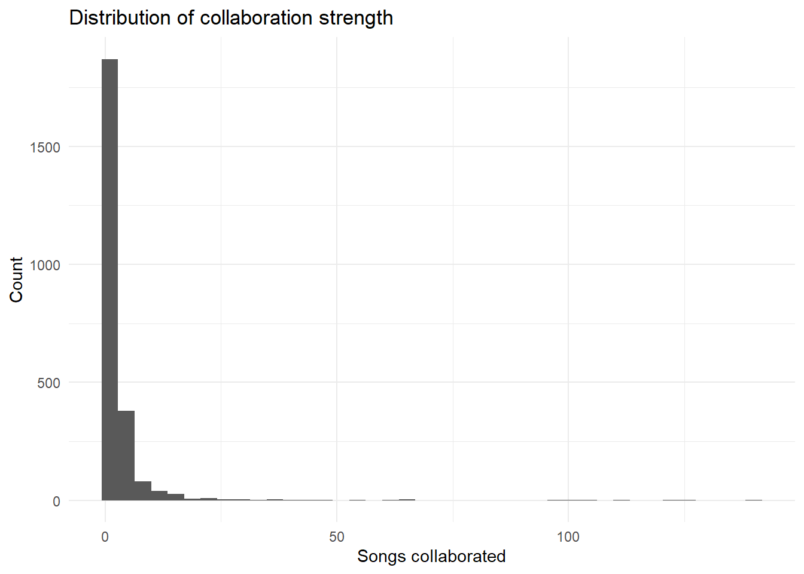
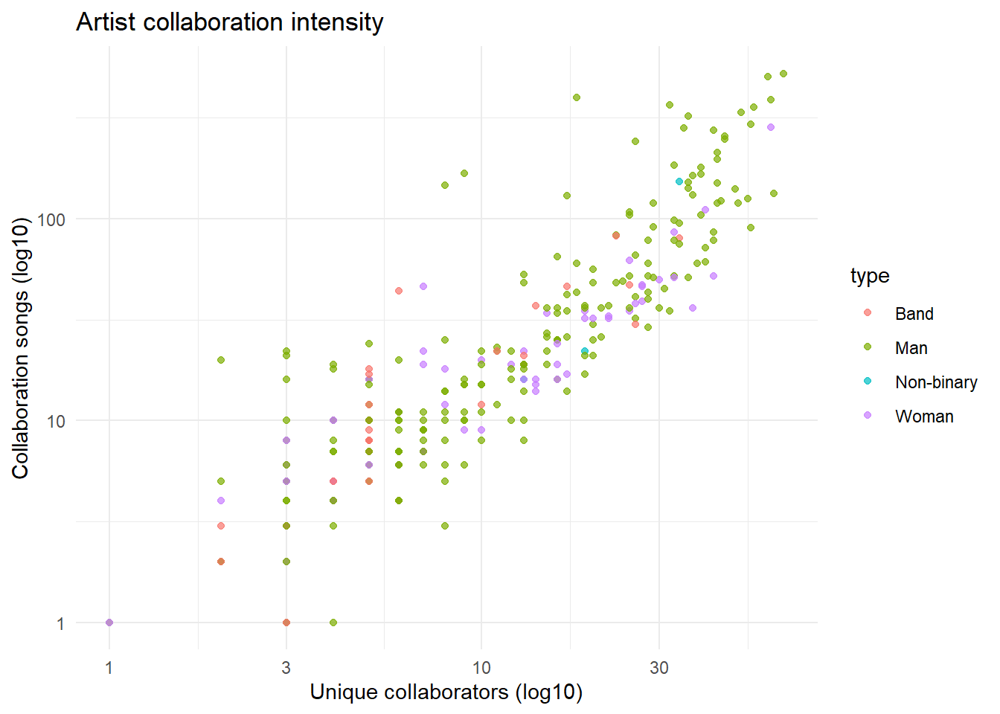
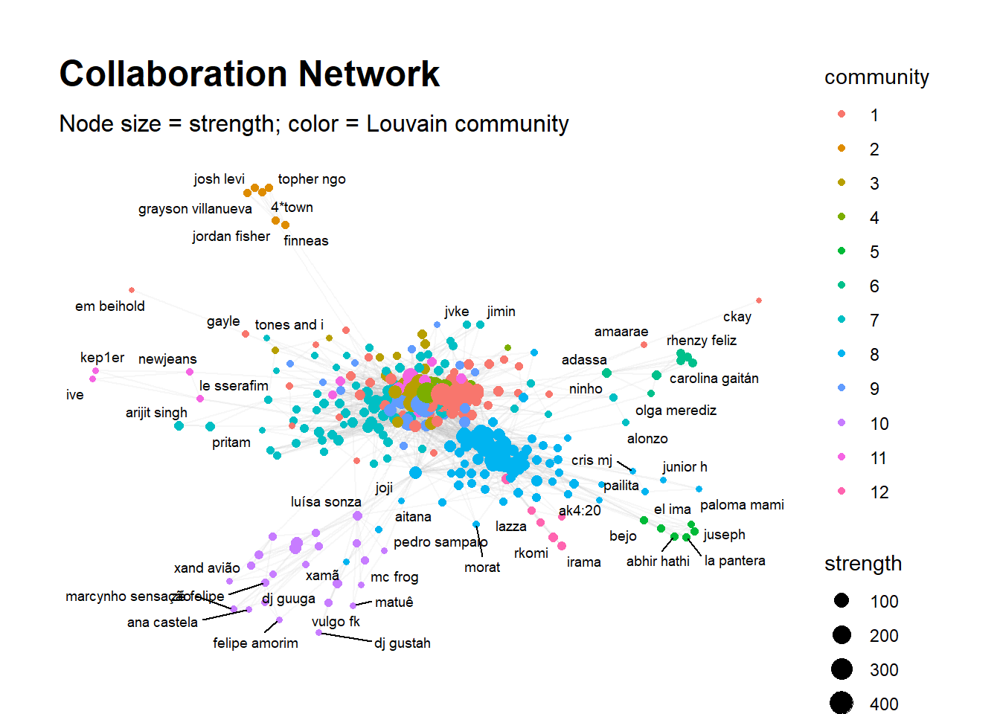
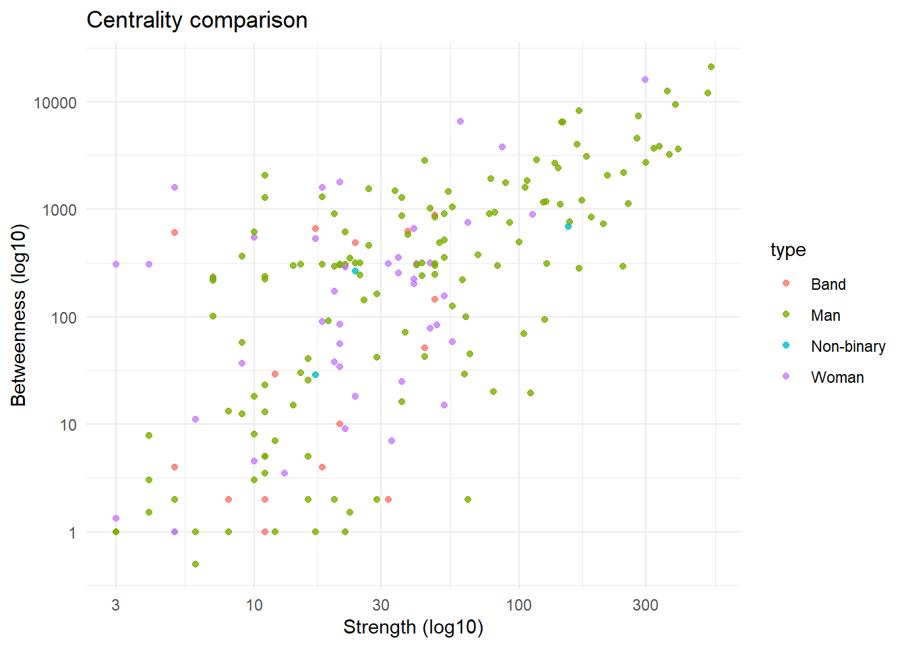
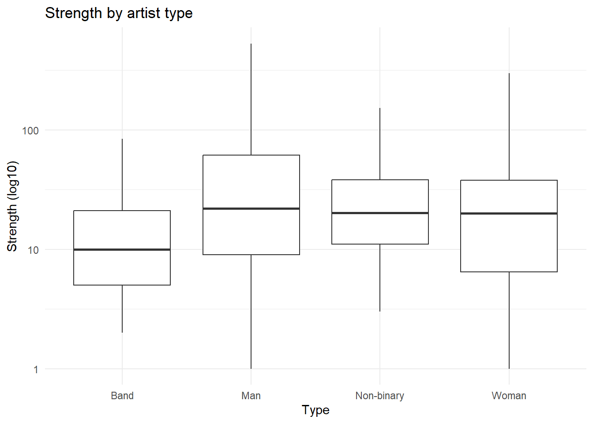
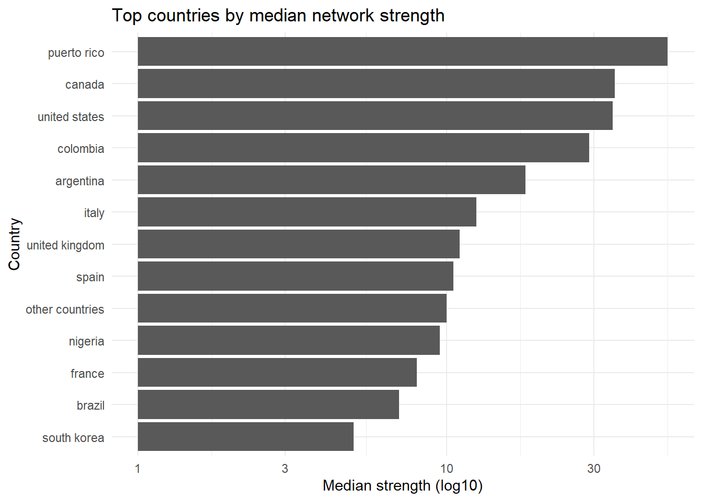
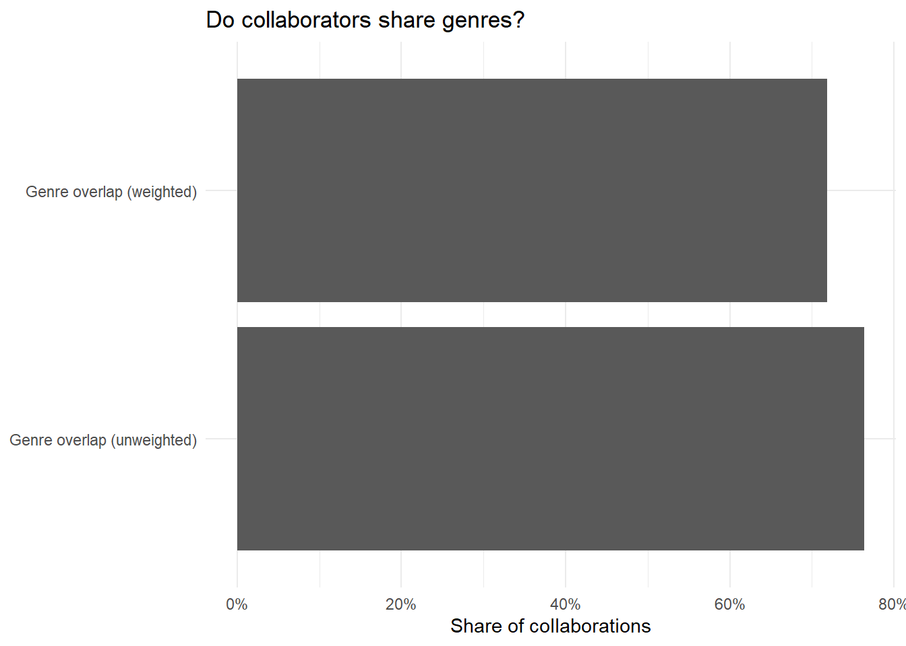
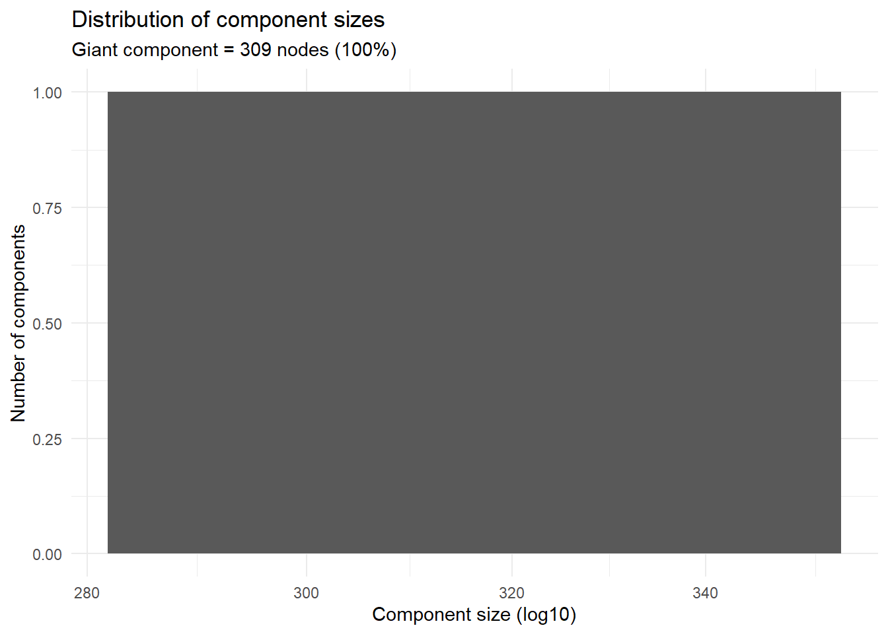
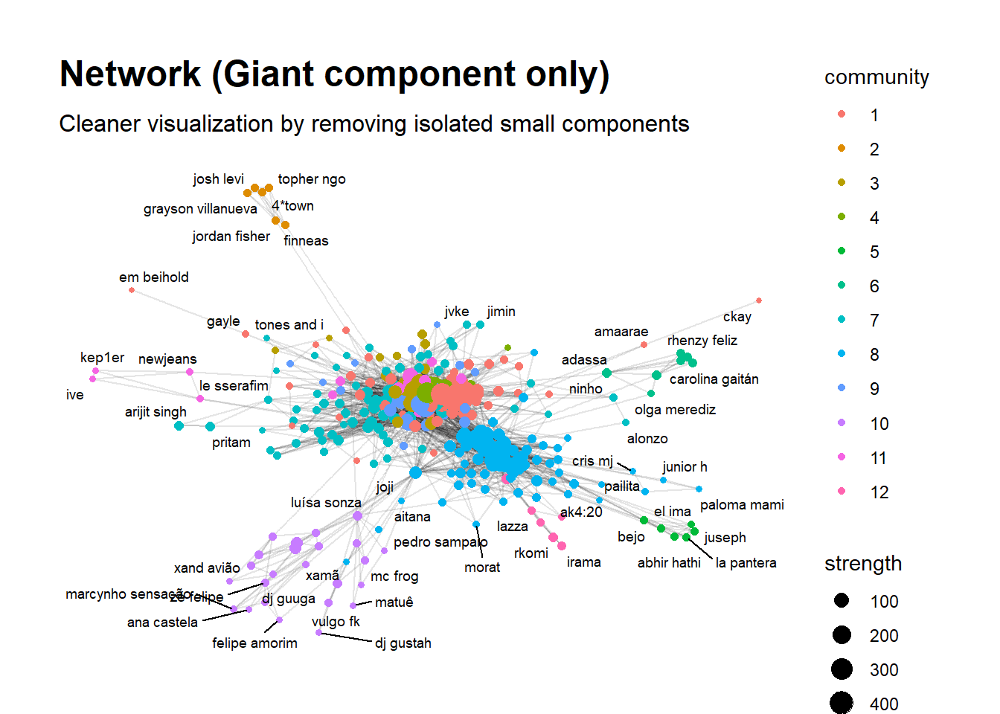
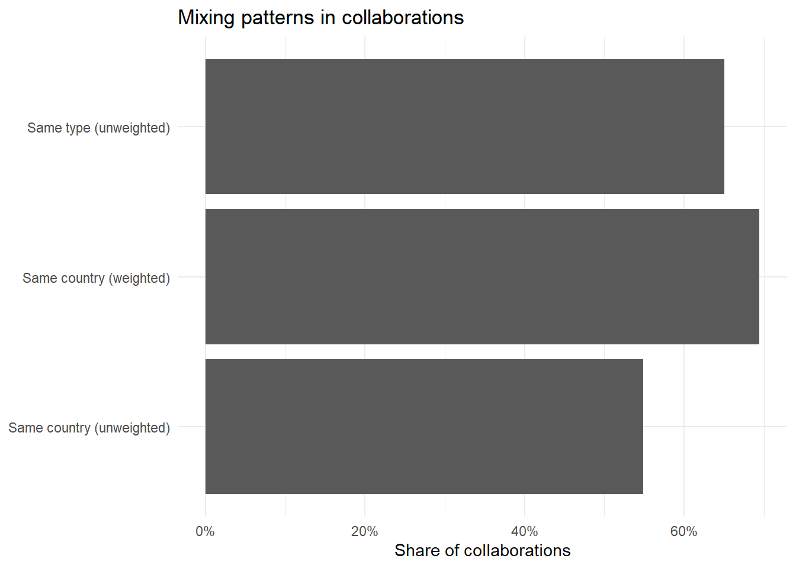

#===========================================================
# Artist Collaboration Network Analysis (Reordered & Clean)
#===========================================================
library(tidyverse)── Attaching core tidyverse packages ──────────────────────── tidyverse 2.0.0 ──
✔ dplyr 1.1.4 ✔ readr 2.1.6
✔ forcats 1.0.1 ✔ stringr 1.6.0
✔ ggplot2 4.0.1 ✔ tibble 3.3.0
✔ lubridate 1.9.4 ✔ tidyr 1.3.2
✔ purrr 1.2.0
── Conflicts ────────────────────────────────────────── tidyverse_conflicts() ──
✖ dplyr::filter() masks stats::filter()
✖ dplyr::lag() masks stats::lag()
ℹ Use the conflicted package (<http://conflicted.r-lib.org/>) to force all conflicts to become errorslibrary(igraph)
Attaching package: 'igraph'
The following objects are masked from 'package:lubridate':
%--%, union
The following objects are masked from 'package:dplyr':
as_data_frame, groups, union
The following objects are masked from 'package:purrr':
compose, simplify
The following object is masked from 'package:tidyr':
crossing
The following object is masked from 'package:tibble':
as_data_frame
The following objects are masked from 'package:stats':
decompose, spectrum
The following object is masked from 'package:base':
unionlibrary(ggraph)
library(stringr)
library(scales)
Attaching package: 'scales'
The following object is masked from 'package:purrr':
discard
The following object is masked from 'package:readr':
col_factor# =========================================================
# 0) Helper Functions
# =========================================================
clean_name <- function(x) {
x %>%
str_replace_all("[\u2010\u2011\u2012\u2013\u2014\u2212]", "-") %>%
str_replace_all("\u00A0", " ") %>%
str_squish() %>%
str_to_lower()
}
split_genres <- function(x) {
x %>% str_split(",") %>% map(str_squish) %>% map(~ .x[.x != "" & .x != "sense dades"])
}
# =========================================================
# 1) Load Data
# =========================================================
artists_raw <- read_csv("artists.csv", show_col_types = FALSE)
collabs_raw <- read_csv("collaborations.csv", show_col_types = FALSE)
# =========================================================
# 2) Clean Data
# =========================================================
artists <- artists_raw %>%
mutate(
artist = clean_name(artist),
country = clean_name(country),
genres = clean_name(genres),
country = if_else(country == "sense dades", NA, country),
genres = if_else(genres == "sense dades", NA, genres),
type = as.factor(type)
) %>%
distinct(artist, .keep_all = TRUE)
collabs <- collabs_raw %>%
rename(from = artist1, to = artist2) %>%
mutate(
from = clean_name(from),
to = clean_name(to),
collab_songs = as.numeric(collab_songs)
) %>%
filter(!is.na(from), !is.na(to), !is.na(collab_songs)) %>%
filter(from != to) %>%
mutate(a = pmin(from, to), b = pmax(from, to)) %>%
group_by(a, b) %>%
summarise(collab_songs = sum(collab_songs), .groups = "drop") %>%
rename(from = a, to = b)
cat("Artists:", nrow(artists), "\n")Artists: 307 cat("Edges after aggregation:", nrow(collabs), "\n")Edges after aggregation: 2445 # ===============================================
# 3) Build Network
# ===============================================
g <- graph_from_data_frame(
d = collabs %>% transmute(from, to, weight = collab_songs),
directed = FALSE
)
v_attr <- tibble(name = V(g)$name) %>%
left_join(artists, by = c("name" = "artist"))
V(g)$type <- v_attr$type
V(g)$country <- v_attr$country
V(g)$genres <- v_attr$genres
V(g)$collab_individuals <- v_attr$collab_individuals
V(g)$artist_collab_songs <- v_attr$collab_songs
# =========================================================
# 4) Compute Network Metrics
# =========================================================
V(g)$degree <- degree(g)
V(g)$strength <- strength(g, weights = E(g)$weight)
V(g)$between_w <- betweenness(g, directed = FALSE, weights = 1 / E(g)$weight)
comm <- cluster_louvain(g, weights = E(g)$weight)
V(g)$community <- factor(membership(comm))
centrality_by_node <- tibble(
artist = V(g)$name,
type = V(g)$type,
country = V(g)$country,
strength = V(g)$strength,
betweenness = V(g)$between_w
)
# =========================================================
# 5) Summary Tables
# =========================================================
print(centrality_by_node %>% arrange(desc(strength)) %>% slice_head(n = 10))# A tibble: 10 × 5
artist type country strength betweenness
<chr> <fct> <chr> <dbl> <dbl>
1 lil wayne Man united states 529 21174.
2 snoop dogg Man united states 514 11945
3 dr. dre Man united states 398 3629
4 future Man united states 388 9418.
5 eminem Man united states 368 3219
6 drake Man canada 362 12523
7 young thug Man united states 338 3815.
8 juicy j Man united states 323 3680
9 kanye west Man united states 300 2713
10 nicki minaj Woman united states 298 16008.print(centrality_by_node %>% arrange(desc(betweenness)) %>% slice_head(n = 10))# A tibble: 10 × 5
artist type country strength betweenness
<chr> <fct> <chr> <dbl> <dbl>
1 lil wayne Man united states 529 21174.
2 nicki minaj Woman united states 298 16008.
3 drake Man canada 362 12523
4 snoop dogg Man united states 514 11945
5 future Man united states 388 9418.
6 farruko Man puerto rico 168 8293.
7 the game Man united states 281 7319
8 anitta Woman brazil 60 6575.
9 david guetta Man france 144 6412.
10 j balvin Man colombia 146 6404.# =========================================================
# 6) Basic Plots
# =========================================================
p_edge_weights <- ggplot(collabs, aes(x = collab_songs)) +
geom_histogram(bins = 40) +
labs(title = "Distribution of collaboration strength",
x = "Songs collaborated", y = "Count") +
theme_minimal()
print(p_edge_weights)
if (all(c("collab_individuals", "collab_songs") %in% names(artists))) {
p_artist_intensity <- artists %>%
filter(!is.na(collab_individuals), !is.na(collab_songs)) %>%
ggplot(aes(x = collab_individuals, y = collab_songs, color = type)) +
geom_point(alpha = 0.7) +
scale_x_log10() + scale_y_log10() +
labs(title = "Artist collaboration intensity",
x = "Unique collaborators (log10)",
y = "Collaboration songs (log10)") +
theme_minimal()
print(p_artist_intensity)
}
# =========================================================
# 7) Network Plot
# =========================================================
set.seed(123)
p_network <- ggraph(g, layout = "fr") +
geom_edge_link(aes(alpha = weight), colour = "grey70", show.legend = FALSE) +
geom_node_point(aes(size = strength, color = community)) +
geom_node_text(aes(label = name), repel = TRUE, size = 2.5, check_overlap = TRUE) +
labs(
title = "Collaboration Network",
subtitle = "Node size = strength; color = Louvain community"
) +
theme_graph(base_family = "sans")
print(p_network)Warning: ggrepel: 255 unlabeled data points (too many overlaps). Consider
increasing max.overlaps
# =========================================================
# 8) Centrality Scatter
# =========================================================
centrality_df <- centrality_by_node %>%
filter(!is.na(strength), !is.na(betweenness),
strength > 0, betweenness > 0)
p_centrality <- centrality_df %>%
ggplot(aes(x = strength, y = betweenness, color = type)) +
geom_point(alpha = 0.8) +
scale_x_log10() + scale_y_log10() +
labs(title = "Centrality comparison",
x = "Strength (log10)", y = "Betweenness (log10)") +
theme_minimal()
print(p_centrality)
# =========================================================
# 9) Strength by Type
# =========================================================
p_strength_by_type <- centrality_by_node %>%
filter(!is.na(type), !is.na(strength), strength > 0) %>%
ggplot(aes(x = type, y = strength)) +
geom_boxplot() +
scale_y_log10() +
labs(title = "Strength by artist type",
x = "Type", y = "Strength (log10)") +
theme_minimal()
print(p_strength_by_type)
# =========================================================
# 10) Country Strength
# =========================================================
p_country_strength <- centrality_by_node %>%
filter(!is.na(country), !is.na(strength), strength > 0) %>%
group_by(country) %>%
summarise(
n_artists = n(),
median_strength = median(strength, na.rm = TRUE),
.groups = "drop"
) %>%
filter(n_artists >= 5) %>%
arrange(desc(median_strength)) %>%
slice_head(n = 15) %>%
ggplot(aes(x = reorder(country, median_strength), y = median_strength)) +
geom_col() +
coord_flip() +
scale_y_log10() +
labs(
title = "Top countries by median network strength",
x = "Country",
y = "Median strength (log10)"
) +
theme_minimal()
print(p_country_strength)
# =========================================================
# 11) Genre Analysis
# =========================================================
artists_genres <- artists %>%
mutate(genres_list = split_genres(coalesce(genres, "")))
top_genres <- artists_genres %>%
select(artist, genres_list) %>%
unnest(genres_list) %>%
count(genres_list, sort = TRUE) %>%
slice_head(n = 15)
p_top_genres <- top_genres %>%
ggplot(aes(x = reorder(genres_list, n), y = n)) +
geom_col() +
coord_flip() +
labs(
title = "Top 15 genres (artist-level frequency)",
x = "Genre",
y = "Number of artists"
) +
theme_minimal()
print(p_top_genres)
# =========================================================
# 12) Genre Overlap on Edges
# =========================================================
edge_genre <- collabs %>%
transmute(artist1 = from, artist2 = to, weight = collab_songs) %>%
left_join(artists_genres %>% select(artist, genres_list), by = c("artist1" = "artist")) %>%
rename(g1 = genres_list) %>%
left_join(artists_genres %>% select(artist, genres_list), by = c("artist2" = "artist")) %>%
rename(g2 = genres_list) %>%
mutate(
genre_overlap = map2_lgl(g1, g2, ~ {
if (is.null(.x) || is.null(.y) || length(.x) == 0 || length(.y) == 0) return(NA)
length(intersect(.x, .y)) > 0
})
)
genre_overlap_summary <- edge_genre %>%
summarise(
share_overlap = mean(genre_overlap, na.rm = TRUE),
share_overlap_weighted =
sum(weight * (genre_overlap %>% replace_na(FALSE))) / sum(weight, na.rm = TRUE),
.groups = "drop"
)
print(genre_overlap_summary)# A tibble: 1 × 2
share_overlap share_overlap_weighted
<dbl> <dbl>
1 0.764 0.718p_genre_overlap <- tibble(
metric = c("Genre overlap (unweighted)", "Genre overlap (weighted)"),
value = c(genre_overlap_summary$share_overlap,
genre_overlap_summary$share_overlap_weighted)
) %>%
ggplot(aes(x = metric, y = value)) +
geom_col() +
coord_flip() +
scale_y_continuous(labels = percent_format(accuracy = 1)) +
labs(
title = "Do collaborators share genres?",
x = NULL,
y = "Share of collaborations"
) +
theme_minimal()
print(p_genre_overlap)
# =========================================================
# 13) Components and Giant Component
# =========================================================
comp <- components(g)
giant_id <- which.max(comp$csize)
giant_share <- comp$csize[giant_id] / vcount(g)
cat("Giant component nodes:", comp$csize[giant_id], "\n")Giant component nodes: 309 cat("Giant component share:", round(giant_share * 100, 2), "%\n")Giant component share: 100 %comp_sizes <- tibble(component = seq_along(comp$csize), size = comp$csize)
p_components <- comp_sizes %>%
ggplot(aes(x = size)) +
geom_histogram(bins = 30) +
scale_x_log10() +
labs(
title = "Distribution of component sizes",
subtitle = paste0("Giant component = ", comp$csize[giant_id],
" nodes (", round(giant_share * 100, 1), "%)"),
x = "Component size (log10)",
y = "Number of components"
) +
theme_minimal()
print(p_components)
g_giant <- induced_subgraph(g, vids = V(g)[comp$membership == giant_id])
set.seed(123)
p_network_giant <- ggraph(g_giant, layout = "fr") +
geom_edge_link(aes(alpha = weight), show.legend = FALSE) +
geom_node_point(aes(size = strength, color = community)) +
geom_node_text(aes(label = name), repel = TRUE, size = 2.5) +
labs(
title = "Network (Giant component only)",
subtitle = "Cleaner visualization by removing isolated small components"
) +
theme_graph(base_family = "sans")
print(p_network_giant)Warning: ggrepel: 255 unlabeled data points (too many overlaps). Consider
increasing max.overlaps
# =========================================================
# 14) Mixing Analysis
# =========================================================
edges_tbl <- collabs %>%
transmute(artist1 = from, artist2 = to, weight = collab_songs)
attrs <- artists %>% select(artist, country, type)
edge_attrs <- edges_tbl %>%
left_join(attrs, by = c("artist1" = "artist")) %>%
rename(country1 = country, type1 = type) %>%
left_join(attrs, by = c("artist2" = "artist")) %>%
rename(country2 = country, type2 = type) %>%
mutate(
same_country = if_else(!is.na(country1) & !is.na(country2), country1 == country2, NA),
same_type = if_else(!is.na(type1) & !is.na(type2), type1 == type2, NA)
)
mix_summary <- edge_attrs %>%
summarise(
share_same_country = mean(same_country, na.rm = TRUE),
share_same_type = mean(same_type, na.rm = TRUE),
share_same_country_weighted =
sum(weight * (same_country %>% replace_na(FALSE))) / sum(weight, na.rm = TRUE),
.groups = "drop"
)
print(mix_summary)# A tibble: 1 × 3
share_same_country share_same_type share_same_country_weighted
<dbl> <dbl> <dbl>
1 0.549 0.650 0.694p_mixing <- tibble(
metric = c("Same country (unweighted)", "Same country (weighted)", "Same type (unweighted)"),
value = c(mix_summary$share_same_country,
mix_summary$share_same_country_weighted,
mix_summary$share_same_type)
) %>%
ggplot(aes(x = metric, y = value)) +
geom_col() +
coord_flip() +
scale_y_continuous(labels = percent_format(accuracy = 1)) +
labs(
title = "Mixing patterns in collaborations",
x = NULL,
y = "Share of collaborations"
) +
theme_minimal()
print(p_mixing)
# =========================================================
# 15) Save Plots
# =========================================================
if (exists("p_edge_weights")) ggsave("A_edge_weights.png", p_edge_weights, width = 8, height = 5, dpi = 300)
if (exists("p_network")) ggsave("D_network.png", p_network, width = 8, height = 6, dpi = 300)Warning: ggrepel: 230 unlabeled data points (too many overlaps). Consider
increasing max.overlapsif (exists("p_centrality")) ggsave("E_centrality.png", p_centrality, width = 8, height = 5, dpi = 300)
if (exists("p_mixing")) ggsave("F_mixing.png", p_mixing, width = 8, height = 5, dpi = 300)
cat("Vertices with missing type:", sum(is.na(V(g)$type)), "\n")Vertices with missing type: 2 cat("Vertices with missing country:", sum(is.na(V(g)$country)), "\n")Vertices with missing country: 2